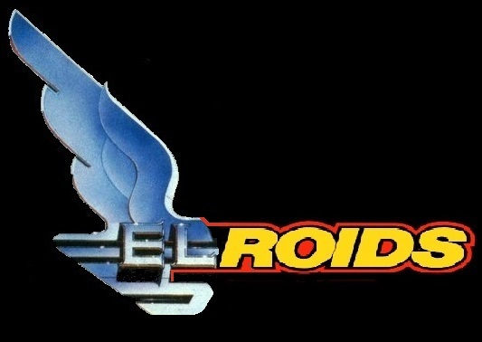

Guide to law levels.
Each system has a law level with 1 being the lowest. Although this is a simplification (and the examples are subjective) law levels roughly correspond to:
- 1 - Lawless (Frontier or war zone).
- 2 - Minimal (The Wild West).
- 3 - Low (1920s Chicago, Victorian London).
- 4 - Medium (Modern day USA).
- 5 - Regulated (Modern day Europe).
- 6 - Highly regulated (Modern day China).
- 7 - Authoritarian (Absolute monarchies, theocracies and dictatorships.)
Some goods have a 'law level' they are only 'legal' in systems with a lower or equal level
In most systems it is acceptable to carry illegal goods. However You can try selling them but there may be a penalty.
Player 'Reputation'.
The player has an individual 'reputation'. This infulences how each system will treat them:
- Reputation >= Law level. No problem
- Reputation <= Law level - 1 (Poor). Tolerate with no action taken.
- Reputation <= Law level - 2 (Criminal). Docking will be blocked.
- Reputation <= Law level - 3 (Outlaw). May be attacked.
Reputation may be harmed by things like:
- Attacking 'non hostile' (white on radar) ships.
- Attempting to sell prohibited items.
Reputation can be improved by things like:
- Paying any fines owed (via 'Player Menu').
- Killing saucers.
- Just waiting. If you don't cause trouble reputation will gradually improve.
Police ships (blue)
These patrol lawful systems.
They may attack a player who had 'Outlaw' status in the system. If this happens best to go to a lower law level system (where scum like you are accepted) and re-build your reputation.